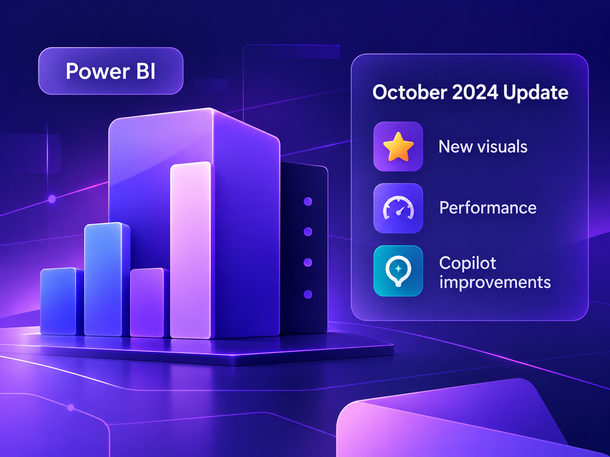

Power BI: cosa cambia con l'ultimo aggiornamento
Panoramica delle novità più interessanti dell'ultimo aggiornamento di Power BI e di come possono semplificare il lavoro quotidiano.
Primo articolo in preparazioneBLOG · DATA & ANALYTICS
Uno spazio dedicato a Power BI, Excel, DAX, data visualization e data storytelling, con aggiornamenti, spunti pratici e contenuti utili per chi lavora ogni giorno con i dati.
IN EVIDENZA
Aggiornamenti, guide pratiche e spunti di riflessione per approfondire il mondo dei dati.
Tutti gli articoli
Panoramica delle novità più interessanti dell'ultimo aggiornamento di Power BI e di come possono semplificare il lavoro quotidiano.
Primo articolo in preparazioneUna raccolta pratica di funzioni e pattern utili che ricorrono spesso nei modelli Power BI.
Prossimamente
Come costruire una narrazione visiva efficace per aiutare chi guarda a capire cosa sta succedendo e perché.
ProssimamenteHAI UN PROGETTO?